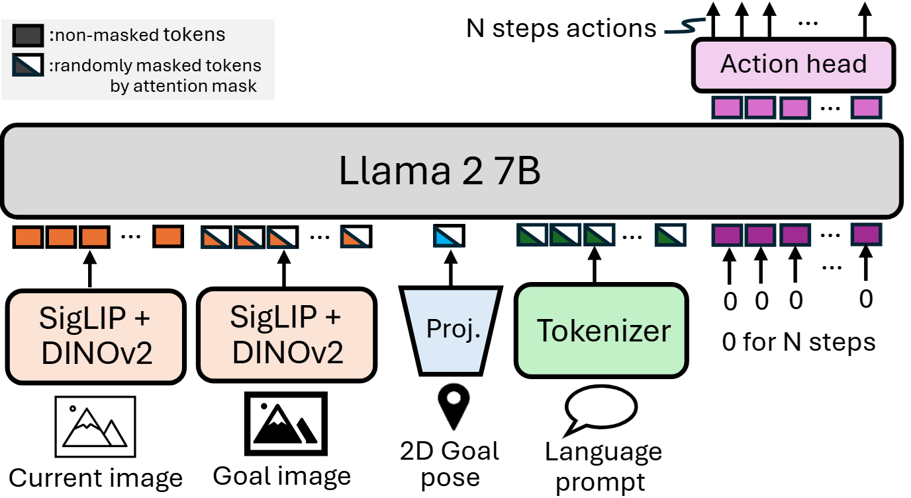
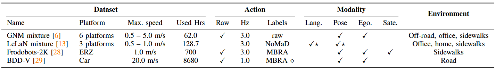

Humans can flexibly interpret and compose different goal specifications, such as language instructions, spatial coordinates, or visual references, when navigating to a destination. In contrast, most existing robotic navigation policies are trained on a single modality, limiting their adaptability to real-world scenarios where different forms of goal specification are natural and complementary. In this work, we present a training framework for robotic foundation models that enables omni-modal goal conditioning for vision-based navigation. Our approach leverages a high-capacity vision-language-action (VLA) backbone and trains with three primary goal modalities: 2D poses, egocentric images, and natural language, as well as their combinations, through a randomized modality fusion strategy. This design not only expands the pool of usable datasets but also encourages the policy to develop richer geometric, semantic, and visual representations. The resulting model, OmniVLA, achieves strong generalization to unseen environments, robustness to scarce modalities, and the ability to follow novel natural language instructions. We demonstrate that OmniVLA outperforms specialist baselines across modalities and offers a flexible foundation for fine-tuning to new modalities and tasks. We believe OmniVLA provides a step toward broadly generalizable and flexible navigation policies, and a scalable path for building omni-modal robotic foundation models.
In this study, we propose a family of Omni-Modal Vision-Language-Action Models (OmniVLA) for autonomous navigation that can ingest goals expressed in multiple modalities, leveraging information across modalities, and achieving a more flexible navigation policy. We train our model with goals specified through three primary modalities: (1) 2D poses, (2) egocentric images, and (3) natural language. By simultaneously learning to interpret these different modalities, the model must develop a richer understanding of the geometric, visual, and semantic information of the task, resulting in a more powerful navigation model as a foundation model. Moreover, our method allows the user to instruct the robot with multiple modalities, making it more user friendly and directly allowing the policy to leverage more than one kind of information about a goal. For example, a user can specify a target pose and provide instructions on \emph{how} to reach it through language.
To train these policies, we compose several design choices into one system, resulting in a flexible and general navigation policy. We use an expressive vision-language-action (VLA) model, OpenVLA as the base model, enabling us to leverage internet-scale knowledge from the VLM backbone and the representations learned during fine-tuning on cross-embodiment robot data. As a result, our policy exhibits strong generalization and fine-tuning capabilities, following language instructions not seen in the training data, and adapting to completely new modalities. Additionally, we address the problem of modality imbalance and scarcity by using modality dropout during training, and modality masking during inference. This ensures that our policy attends to all available goal modalities and learn from cross-modal goal representations across all datasets.
Our training corpus spans 9,500 hours across 10 platforms, including human-collected data, covering a wide range of environments. GNM and LeLaN are themselves mixtures of 7 and 5 publicly available datasets, respectively. The GNM mixture includes GO Stanford4, HuRoN (SACSoN), RECON, SCAND, CoryHall, TartanDrive, and Seattle. LeLaN combines both robot and non-robot data to learn a generalized language-conditioned navigation policy, using a model-based approach to generate counterfactual actions toward target objects along with language prompts derived from VLM reasoning. For LeLaN, we use released synthetic action commands and language prompts from GO Stanford2, GO Stanford4, HuRoN (SACSoN), the HumanWalking dataset, and YouTube videos. (HumanWalking and YouTube datasets are available from the LeLaN project page.)
While large datasets support generalization, large-scale collection efforts often introduce noise, which can reduce accuracy. For the FrodoBots-2k dataset, we use synthetic actions generated with MBRA. Because existing reannotation approaches cannot bridge the embodiment gap in the BDD-V dataset (autonomous vehicles vs. small robots), we train a reannotation model to generate reasonable synthetic actions, enabling its use for training in a manner similar to MBRA. Finally, we finetune OmniVLA on the CAST dataset to evaluate adaptability to a new language domain.
We evaluate OmniVLA on language-, 2D goal pose-, and egocentric goal image-conditioned navigation across different robots to analyze cross-embodiment performance.
We deploy OmniVLA on the FrodoBots and ERZ for language-conditioned navigation. In these videos, we provide out-of-distribution language prompts that both instruct the robot on how to move and specify the target location. Our training dataset includes prompts such as “move toward X,” where X denotes the target object.
The following videos use in-distribution language prompts. Our policy successfully avoids collisions with obstacles between the robot’s starting position and the target objects.
We deploy OmniVLA on other robot embodiments, including the Unitree GO1 quadruped and Vizbot, a Roomba-based prototype, in both indoor and outdoor settings. Using different cameras on the GO1 and Vizbot, we evaluate the cross-embodiment performance of our policy. The robots achieve successful goal-reaching behavior even in the most challenging language-conditioned navigation tasks, highlighting the policy’s generalization ability.
By training on omni-modal task representations, OmniVLA can learn to follow multiple goal signals. We conduct experiments where tasks are specified by providing both 2D goal poses (where?}) and behavioral language instructions (how?) in 10 different environments.
We deploy OmniVLA for long-range 2D goal pose-conditioned navigation. Conditioned on 2D goal poses, our policy navigates to targets 25–100 meters from the robot’s starting position. GPS is used to estimate both the robot’s location and the target goal position.
In addition to language- and 2D pose-conditioned navigation, we evaluate the egocentric goal image-conditioned navigation policy, primarily in indoor environments. Similar to prior image-conditioned approaches such as ViNT, ExAug, and NoMaD, our policy can navigate toward goals up to 3 meters away, enabling the use of a topological memory for reaching more distant targets. To collect this goal loop, we teleoperate the robot and record image observations at a fixed frame rate of 1 Hz. During deployment, we start from the initial observation and continuously identify the closest node in the topological memory. At each time step, the image from the next node is provided as the goal image to compute the next action. Our OmniVLA supports navigation using multiple modalities to specify both the goal location and the desired movement.
@misc{hirose2025mbra,
title={OmniVLA: An Omni-Modal Vision-Language-Action Model for Robot Navigation},
author={Noriaki Hirose and Catherine Glossop and Dhruv Shah and Sergey Levine},
year={2025},
eprint={xxxx.xxxxx},
archivePrefix={arXiv},
primaryClass={cs.RO},
url={https://arxiv.org/abs/xxxx.xxxxx},
}